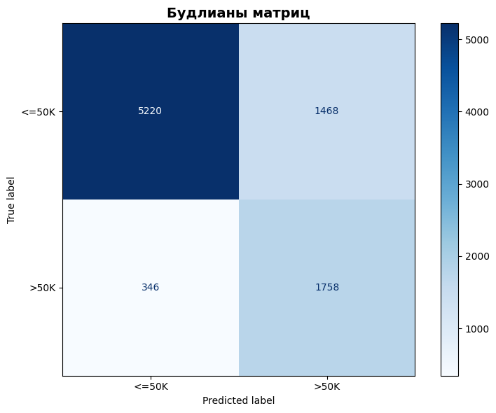
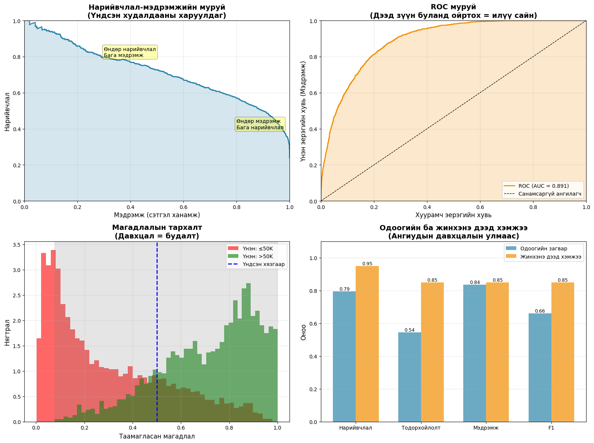
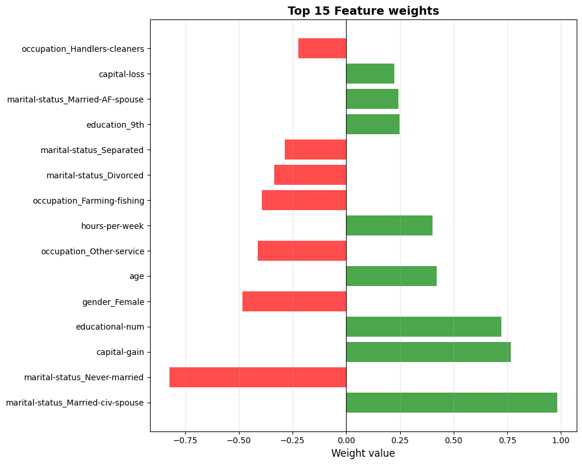
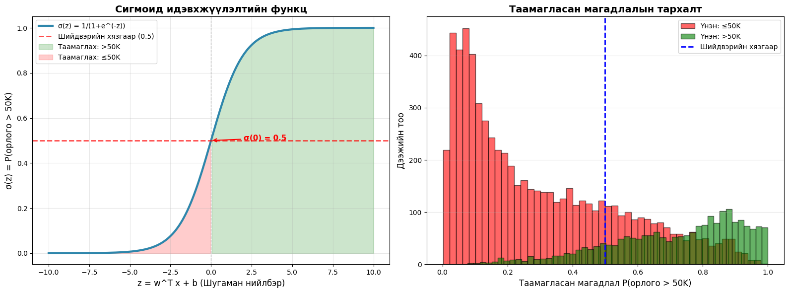

Оршил
Энэ төслийн зорилго нь хувь хүний жилийн орлого 50,000 ам.доллараас дээш эсэхийг таамаглах явдал юм. Бид АНУ-ын Хүн амын тооллогын Adult Income өгөгдлийн санг ашиглан орлогын түвшинг урьдчилан таамаглах загвар боловсруулна. Энэхүү өгөгдлийн сан нь нас, боловсрол, мэргэжил, гэр бүлийн байдал зэрэг олон хувьсагчийг агуулдаг бөгөөд эдгээр нь хувь хүний санхүүгийн байдалд нөлөөлдөг гол хүчин зүйлс юм.
Төслийн үндсэн зорилго нь зөвхөн таамаглал гаргах бус, өгөгдөл дэх хамаарал, классын тэнцвэргүй байдал, оролцож буй хувьсагчдын нөлөөллийг ойлгож, загварын үйл ажиллагааг үнэлэхэд оршино. Энд бид логистик регрессийг ашиглан хоёртын ангиллын асуудлыг шийдвэрлэх ба загварын үзүүлэлтүүд нь орлогыг зөв таамаглах боломжийг хэр сайн хангаж байгааг илтгэнэ. Үүнээс гадна энэ төсөл нь өгөгдлийн шинжилгээ, ангиллын загварчлал болон статистик үндэслэлтэй шийдвэр гаргалтын практик дадлага олгоно.
Өгөгдөл
Өгөгдлийн эх үүсвэр ба зорилго
Бид Kaggle платформын Income Dataset буюу орлогын мэдээллийг ашигласан. Энэ өгөгдлийн багц дотор нас, боловсрол, мэргэжил, гэрлэлтийн байдал, хүйс зэрэг нийгэм-эдийн засгийн шинж чанаруудыг илэрхийлэх хувьсагчид бий. Бидний зорилтот хувьсагч бол income_>50K (0 = \(\leq50K\), 1 = \(>50K\)). Өгөгдлийг цэвэрлэсний дараа үлдсэн хувьсагчууд дээр тулгуурлан энэ хувьсагчийн утгыг зөв таамаглах нь бидний үндсэн зорилго юм.
Түүврийн нийт хэмжээ нь ойролцоогоор 44,000 бөгөөд бид үүнийг сургах болон үнэлгээ хийх 2 хэсэг болгож хуваана. Хуваалтын дараа 35,165 сургалт, 8,792 баталгаажуулалтын хэсгийг бүрдүүлнэ.
Гэхдээ энэ өгөгдөлтэй ажиллах томоохон бэрхшээл нь классуудын тэнцвэргүй байдал юм. Ихэнх хүмүүс (\(\approx\) 76%) \(\leq50K\) орлоготой. Харин цөөнх хувь нь (\(\approx\) 24%) \(>50K\) орлоготой.
Бид үргэлж \(\leq50K\) гэж таадаг гэнэн модел гаргасан ч accuracy нь 76% болно гэсэн үг. Иймээс бид 2 классыг хоёуланг нь оновтойгоор авч үздэг логистик регресс загвар гаргах ёстой болоод байна. Үүний тулд F1 оноо, Recall зэрэг үзүүлэлтүүдийг чухалчилна.
Өгөгдлөө цэвэрлэх
Өгөгдлийн хэлбэр:
\([\) age,workclass,fnlwgt,education,educational-num,marital-status,occupation,relationship,race,gender,capital-gain,capital-loss,hours-per-week,native-country,income_>50K \(]\)
Бид анхны өгөгдөлөө давхардсан, ач холбогдол багатай буюу тайлбарлахад хэцүү баганыг арилгаж хялбаршуулсан.
Ашигласан хувьсагчид (9):
Тоон (5):
age,educational-num,capital-gain,capital-loss,hours-per-weekЧанарын (4):
education,marital-status,occupation,gender
Өгөгдөл хуваах
Бид өгөгдлийг сургалт/баталгаажуулалт гэсэн хоёр хэсэгт 80/20 харьцаатайгаар, хоёр хэсэгт income_>50K классын харьцаа тэнцүү байхаар хувааж, train_split.csv, val_split.csv файлд хадгалсан. Анхны өгөгдлийн багц дотор income_>50K-н 76% нь 0, 24% нь 1 утгатай бол хуваасны дараа энэ харьцаа эвдлээгүй гэсэн үг.
Урьдчилсан боловсруулалт
Тоон хувьсагчид:
StandardScaler нь тоон хувьсагч бүрийг дундаж утга нь 0, стандарт хазайлт нь 1 болохоор нормальчилдаг. Бүх хувьсагчийг түүврийн дундаж руу нь төвлөрүүлснээр градиент дээр суурилсан алгоритмууд илүү хурдан, тогтвортой суралцахад тусална.
\[ X_{\text{scaled}} = \frac{X - \mu}{\sigma} \]
Чанарын хувьсагчид:
OneHotEncoder нь нэг чанарын хувьсагчийг тус бүрийн чанаруудыг илэрхийлэх хоёртын вектор лүү хөрвүүлж, тоон утгаар илэрхийлдэг нь машин сургалтын алгоритмуудад зохимжтой болгоно. Ямар ч дараалал, зэрэглэл авч үздэггүй.
Жишээлбэл, education гэх чанарын хувьсагчийг авч үзье.
\([E = \{\text{HS}, \text{Bachelors}, \text{Masters}, \text{Doctorate}\}]\)
One-hot кодчилол нь уг хувьсагчийг дараах байдлаар хувиргана:
\[ f(x) = \begin{cases} [1, 0, 0, 0] & \text{if } x = \text{HS} \\[1mm][0, 1, 0, 0] & \text{if } x = \text{Bachelors} \\[1mm][0, 0, 1, 0] & \text{if } x = \text{Masters} \\[1mm][0, 0, 0, 1] & \text{if } x = \text{Doctorate} \end{cases} \]
Кодлогдсон онцлог (feature) бүр нь одоо Бернуллийн санамсаргүй хувьсагч болно.
Загварын гиперпараметр:
learning_rateойролцоогоор 0.1max_iterойролцоогоор 800reg_lambda= 1e-4 (L2)lr_decay= 1e-4threshold= 0.5 (шийдвэрийн хязгаар)
Загварын хэрэгжүүлэлт
Бид энэ төсөлд логистик регрессийн загварыг гараар хэрэгжүүлсэн. Яагаад гэвэл sklearn-ийн LogisticRegression нь олон зүйлийг автоматаар хийдэг бөгөөд бид хэрхэн ажилладгийг нь ойлгохыг илүүд үзлээ. Мөн сурах хурдны бууралт, class weighting зэрэг сонирхолтой зүйлсийг өөрсдөө туршиж үзэхийг хүссэн.
Логистик регрессийн үндэс
Логистик регресс нь хоёртын ангилал хийх суурь загваруудын нэг юм. Шугаман регресс нь тасралтгүй утгуудыг таамагладаг бол логистик регресс нь аливаа инстанц нь тодорхой классын байх магадлалыг тооцоолдог.
Оролтын хувьсагч \(\mathbf{x}\) -н хувьд \[ P(y = 1 \mid \mathbf{x}) \]
буюу гаралт \(y\) нь \(1\)-тэй тэнцүү байх магадлалыг олох зорилготой.
Эхлээд бид оролтуудын шугаман тэгшитгэлийг бодно:
\[ z_i = \mathbf{w}^\top \mathbf{x}_i + b \]
Үүнд:
- \(\mathbf{w}\) = жингийн вектор (сурах параметрүүд)
- \(b\) = хазайлтын утга
- \(\mathbf{x}_i\) = түүврийн онцлогийн вектор \(i\)
- \(z_i\) = logit” буюу log odds
if issparse(X_array):
z = X_array.dot(self.weights) + self.bias
else:
z = np.dot(X_array, self.weights) + self.biasСигмойд функц
Сигмойд функц нь дээрх шугаман нийлбэр \(z\) -ийг магадлал болгоно.
\[ \sigma(z) = \frac{1}{1 + e^{-z}} \]
def sigmoid(self, z):
return 1 / (1 + np.exp(-np.clip(z, -500, 500))) # overflow-оос сэргийлэхЭндээс модел нэг түүврийн хувьд таамаглах магадлал нь дараах томъёгоор илэрхийлэгдэнэ:
\[ \hat{p}_i = P(y_i = 1 \mid \mathbf{x}_i) = \sigma(z_i) = \sigma(\mathbf{w}^T \mathbf{x}_i + b) \]
Алдааны функц
Одоо бид загварыг яаж сургахын тулд алдааны функцийг тодорхойлох хэрэгтэй. Логистик регресст binary cross-entropy хэмээх ойлголтыг ашигладаг.
Нэг таамаглалын хувьд алдаа нь:
\[ \ell = -\left[y \log(\hat{y}) + (1-y)\log(1-\hat{y})\right] \]
Үүнд:
- \(y\) = жинхэнэ утга (0 or 1)
- \(\hat{y}\) = таамагласан утга
Cross-entropy нь загварыг итгэлтэйгээр буруу таамаглал гаргахыг илүү шийтгэдэг. Өөрөөр хэлбэл 1 эсвэл 0-тэй маш ойрхон магадлал (0.99, 0.01 г.м.) гаргаад энэ нь буруу болж таарвал алдаа нь өндөр гарч ирнэ.
| Таамаглал \(\hat{y}\) | Алдаа \(-\log(\hat{y})\) | Шийтгэлийн түвшин |
|---|---|---|
| 0.99 (итгэлтэй, зөв) | 0.01 | Маш бага |
| 0.50 (итгэл багатай) | 0.69 | Дунд зэргийн |
| 0.10 (итгэлтэй, буруу) | 2.30 | Том |
| 0.01 (маш итгэлтэй, буруу) | 4.61 | Маш том |
\[ L_{\text{CE}} = -\frac{1}{m}\sum_{i=1}^{m} \left[ y_i \log(\hat{y}_i) + (1 - y_i)\log(1 - \hat{y}_i) \right]. \]
L2 тогтворжуулалт (regularization)
Хэт том утгатай жингээс үүдэлтэй overfitting-ээс сэргийлнэ
\[ \frac{\lambda}{2m}\|\mathbf{w}\|^2 \]
Үүнд:
\(\lambda\) = тогтворжуулалтын хэмжээ (гиперпараметр)
\(m\) = түүврийн хэмжээ
\(\|\mathbf{w}\|^2 = w_1^2 + w_2^2 + \cdots + w_n^2\)
Нийт алдаа:
\[ L = -\frac{1}{m}\sum_{i=1}^{m}\left[y_i\log(\hat{y}_i) + (1-y_i)\log(1-\hat{y}_i)\right] + \frac{\lambda}{2m}\|\mathbf{w}\|^2 \]
def compute_loss(self, y_true, y_pred, sample_weights=None):
m = len(y_true)
epsilon = 1e-15
y_pred = np.clip(y_pred, epsilon, 1 - epsilon)
sample_losses = -(y_true * np.log(y_pred) +
(1 - y_true) * np.log(1 - y_pred))
if sample_weights is not None:
sample_losses = sample_losses * sample_weights
cross_entropy = np.mean(sample_losses)
l2_penalty = (self.reg_lambda / (2 * m)) * np.sum(self.weights ** 2)
return cross_entropy + l2_penaltyГрадиент бууруулалт (Gradient descent)
Одоо манай алдагдлын функц бий. Гэхдээ нийт алдааг хэрхэн багасгахын тулд градиент бууруулалт гэж нэрлэгддэг аргыг ашиглана. Энэ тохиолдолд градиент гэдэг нь жингүүдийн аль чиглэлд өөрчлөгдөх үед алдаа нь хамгийн хурдтай өсөж буурахыг илэрхийлдэг вектор.. Градиент бууруулалтын үндсэн санаа нь уг градиентыг тооцоолоход оршино.
Жин шинэчлэлийн дүрэм:
\[ \begin{aligned} w &\leftarrow w - \alpha \cdot \nabla_w J \\ b &\leftarrow b - \alpha \cdot \nabla_b J \end{aligned} \]
Энд \(\alpha\) бол сурах хурд — бид хэр хурдан алхах вэ гэдгийг тодорхойлдог. Градиентууд нь:
\[ \begin{aligned} \nabla_w J &= \frac{1}{m}X^\top(\hat{y} - y) + \frac{\lambda}{m}w \\ \nabla_b J &= \frac{1}{m}\sum_{i=1}^{m}(\hat{y}^{(i)} - y^{(i)}) \end{aligned} \]
Кодонд:
def _compute_gradients(self, X, y, y_pred):
m = len(y)
error = y_pred - y
# Жингийн градиент + L2
dw = (1/m) * X.T.dot(error)
if self.reg_lambda > 0:
dw += (self.reg_lambda / m) * self.weights
# Bias-ийн градиент
db = (1/m) * np.sum(error)
return dw, dbСурах хурдны бууралт: Оновчтой конвергенц
Нэг асуудал: хэрэв сурах хурд хэт өндөр бол, алдагдлын функцийн минимумыг алдаж, “bounce around” хийж магадгүй. Хэт бага бол, маш удаан сургана. Шийдэл нь юу вэ? Сурах хурдны бууралт — эхлээд том алхамуудаар эхлээд, цаг хугацааны явцад багасгана:
\[ \alpha_t = \frac{\alpha_0}{1 + \text{decay} \cdot t} \]
Энэ нь загварт эхэндээ хурдан суралцах, дараа нь минимумын ойролцоо нарийвчлалтай алхах боломж олгоно. Кодонд:
for iteration in range(self.max_iter):
# Одоогийн сурах хурдыг тооцоолох
current_lr = self.initial_lr / (1 + self.lr_decay * iteration)
# Жингүүдийг шинэчлэх
self.weights -= current_lr * dw
self.bias -= current_lr * dbКлассын жинлэлт: Тэнцвэргүй өгөгдөлтэй ажиллах
Манай өгөгдөлд 76% нь \(\leq50K\), 24% нь \(>50K\) байна. Хэрэв бид юу ч хийхгүй бол, загвар зүгээр л “бүх зүйл \(\leq50K\)” гэж таамаглаж, 76% нарийвчлалд хүрч магадгүй — гэхдээ энэ нь ямар ч хэрэггүй юм!
Шийдэл нь классын жинлэлт юм. Бид цөөнх классын (>50K) алдааг илүү “чухал” болгоно:
\[ w_{\text{class}} = \frac{m}{2 \cdot m_{\text{class}}} \]
Кодонд:
if self.class_weight == 'balanced':
classes = np.unique(y)
weights = len(y) / (len(classes) * np.bincount(y.astype(int)))
sample_weights = weights[y.astype(int)]
else:
sample_weights = np.ones(len(y))
# Алдагдлыг тооцоолохдоо sample_weights ашиглах
loss = -np.mean(sample_weights * (y * np.log(y_pred_clipped) +
(1 - y) * np.log(1 - y_pred_clipped)))Пайплайн
Sklearn-ийн Pipeline нь бүх зүйлийг зохион байгуулахад туслана. Бид preprocess (StandardScaler + OneHotEncoder) болон манай custom LogisticRegression-г нэг л обьект болгон нэгтгэж чаддаг:
from sklearn.pipeline import Pipeline
from sklearn.compose import ColumnTransformer
from sklearn.preprocessing import StandardScaler, OneHotEncoder
# Тоон ба категори баганыг тусгаарлах
num_features = ['age', 'educational-num', 'capital-gain', 'capital-loss', 'hours-per-week']
cat_features = ['education', 'marital-status', 'occupation', 'gender']
# Preprocessing pipeline
preprocessor = ColumnTransformer([
('num', StandardScaler(), num_features),
('cat', Pipeline([
('encoder', OneHotEncoder(drop='first', sparse_output=False, handle_unknown='ignore'))
]), cat_features)
])
# Бүтэн pipeline
model = Pipeline([
('preprocess', preprocessor),
('logreg', LogisticRegression(
learning_rate=0.1, max_iter=800, reg_lambda=1e-4,
lr_decay=1e-4, class_weight='balanced', threshold=0.5
))
])
model.fit(X_train, y_train)Үр дүн
Ерөнхий гүйцэтгэл:
Эдгээр тоонууд юу гэсэн үг вэ? Бидний загвар ерөнхийдөө сайн ажилладаг боловч цөөнх классыг (>50K) таних нь илүү хэцүү байна. Энэ нь тэнцвэргүй өгөгдлийн ердийн асуудал юм.
Confusion матриц
Confusion матриц нь манай алдаануудын төрлийг харуулна:

Яагаад вэ? Өгөгдөл тэнцвэргүй байгаа учраас, энэ загвар байнга олонх классыг (\(\leq50K\)) харахаар сургагдсан. Энэ нь цөөнх классыг таних нь хэцүү болгодог.
Класс тус бүр дээрх гүйцэтгэл
Класс тус бүрээр нарийвчлан харвал:
\(\leq50K\) анги (олонх): - Precision: 0.89 - Recall: 0.91
- F1: 0.90
Загвар энэ классыг амархан таньдаг.
\(>50K\) анги (цөөнх): - Precision: 0.66 - Recall: 0.59 - F1: 0.62
Илүү муу. Энэ нь тэнцвэргүй өгөгдлийн шууд үр дагавар — цөөн дээжтэй ангиудыг суралцах нь хэцүү.
Онцлогийн ач холбогдол
Жингүүдийг харахад, юу хамгийн чухал болохыг харж болно. Эхний 5 эерэг ба сөрөг онцлогууд:
Эерэг нөлөө (>50K рүү ойртуулах):
educational-num(+0.89): Боловсрол өндөр байх тусам орлого өндөр байх магадлал ихтэй.capital-gain(+0.76): Хэрэв та хөрөнгө оруулалтаас орлого олж байвал орлого өндөр байх магадлал дээшилнэ.marital-status_Married-civ-spouse(+0.46): Гэрлэсэн хүмүүс илүү тогтвортой орлоготой байх хандлагатай.occupation_Exec-managerial(+0.52): Удирдах албан тушаал = илүү өндөр цалин.hours-per-week(+0.28): Илүү их ажилласан = илүү их мөнгө.
Сөрөг нөлөө (\(\leq50K\) рүү ойртуулах):
occupation_Other-service(-0.67): Үйлчилгээний ажил ихэвчлэн бага цалинтай.marital-status_Never-married(-0.48): Ганц бие байх нь бага орлоготой холбоотой (гэхдээ бодит байдалд бусад хүчин зүйлээс шалтгаалж магадгүй).capital-loss(-0.41): Хөрөнгийн алдагдал санхүүгийн асуудлын шинж тэмдэг.education_HS-grad(-0.32): Бүрнэ дунд боловсрол дангаараа өндөр орлого хангахад хүрэлцэхгүй.
Магадлалын тархалт
Сигмоид функц шугаман нийлбэр буюу linear combination-ийг (\(z = w_1 x_1 + w_2 x_2 + \dots + w_n x_n + b\)) магадлал руу хөрвүүлдэг.
\(\leq50K\) хүмүүсийн хувьд: - Дундаж магадлал (>50K байх): 0.18 - Ихэнх нь 0-0.3 хооронд
Загвар эдгээр хүмүүсийг 100% эерэг биш гэж бодож байна, гэхдээ ихэвчлэн магадлалыг бага байлгадаг.
\(>50K\) хүмүүсийн хувьд: - Дундаж магадлал: 0.57 - Илүү өргөн тархалттай (0.2-0.9)
Зарим >50K орлоготой хүмүүс өндөр магадлалтай (0.9+) гарч байгаа ч, зарим нь харьцангуй бага магадлалтай (0.2–0.4) байна. Энэ магадлалын давхцал нь загвар төгс ажиллахаас өөр аргагүйг харуулж байна. Зарим өгөгдөл дээр тодорхой ангилалт хийх хэцүү.
PR Trade-off
Яагаад бид 100% precision ба 100% recall-д зэрэг хүрч чадахгүй гэж?
Математик талаас боломжгүй, учир нь ангиуд заримдаа давхцдаг. Манай магадлалын тархалтын график үүнийг тодорхой харуулна. Зарим өндөр орлоготой хүмүүсийг загвар бага магадлалтай гэж үзэж, зарим \(\leq50K\) хүмүүс өндөр магадлалтай гэж үнэлдэг. Иймээс бид аль ч загвараар 100% зөв ангилах боломжгүй.
Загварын ерөнхий гүйцэтгэлийг ROC AUC=0.891 үзүүлж байна. Энэ нь санамсаргүй таамаглалаас (0.5) илүү сайн бөгөөд ангилалд дунджаар үнэлгээ сайн байгааг харуулна. Төгс үзүүлэлт биш (1.0), гэхдээ оюутны төсөлд анхны оролдлого болгон маш сайн гүйцэтгэл юм.

Зүүн талын Precision–Recall муруй нь бидний хамгийн том шийдвэрийн тэнцвэрийг илтгэнэ. Recall-ийг өсгөх үед илүү олон өндөр орлоготой хүмүүсийг илрүүлэх боломжтой ч, босго оноо доошлохын хэрээр Precision буурч, буруу эерэг таамаглал нэмэгддэг. Харин Precision-ийг сайжруулахын тулд илүү хатуу босго тавибал загвар зөв таамаглалд илүү итгэлтэй болох авч, олон жинхэнэ өндөр орлоготой хүмүүсийг орхигдуулах эрсдэлтэй. Энэ муруй нь хоёр классын үл тэнцвэртэй өгөгдлийн үед бодит гүйцэтгэлийг илүү үнэн зөв харуулдаг тул стратегийн хувьд түлхүүр үзүүлэлт болдог.
Баруун талын ROC муруй харьцангуй ерөнхий дүр зургийг өгч, манай загварын ялгах чадвар AUC = 0.891 гэдгийг харуулж байна. Энэ нь санамсаргүй таамаглалаас эрс илүү гүйцэтгэлтэй боловч ROC муруйн нь үл тэнцвэртэй өгөгдөлд хэт өгөөмөр ханддаг гэдгийг мартаж болохгүй. Иймээс өндөр AUC үзүүлэлт нь өөрөө хангалттай биш: практикт бид босго оноог бодитоор тохируулж, Precision ба Recall-ийн хооронд төслийн зорилгод нийцсэн зөв тэнцвэрийг олох шаардлагатай хэвээр байна.
Онцлогийн жин
Жингүүд нь онцлогийн чухал байдлыг харуулна. Эерэг жин = өндөр орлого руу түлхэх, сөрөг жин = бага орлого руу түлхэх:

Хамгийн өндөр нөлөөтэй хүчин зүйлс:
- educational-num (+0.89): Боловсролын түвшин. Энэ нь хамгийн хүчтэй эерэг нөлөөтэй хүчин зүйл болж байна. Боловсрол өндөр байх тусам орлого өндөр байх магадлал эрс нэмэгдэнэ.
- capital-gain (+0.76): Хөрөнгө оруулалтын ашиг. Санхүүгийн нэмэлт эх үүсвэртэй байх нь өндөр орлогын тод шинж тэмдэг юм.
- occupation_Other-service (-0.67): Үйлчилгээний салбарын ажил. Энэ нь орлогод сөргөөр нөлөөлж байна, өөрөөр хэлбэл энэ салбарт ажиллагсад \(\leq50K\) классд орох магадлал өндөр.
- marital-status_Never-married (-0.48): Гэрлэж байгаагүй. Ганц бие хүмүүс гэр бүлтэй хүмүүстэй харьцуулахад орлого багатай байх хандлага ажиглагдсан.
- marital-status_Married-civ-spouse (+0.46): Гэрлэсэн байдал. Эсрэгээрээ, гэр бүлийн тогтвортой байдал нь өндөр орлоготой эерэг хамааралтай байна.
Эдгээр үр дүн нь нийгэм, эдийн засгийн бодит байдалтай бүрэн нийцэж байна. Загвар маань зүгээр нэг тоо таах биш, бодит амьдралын зүй тогтлыг олж харсан гэж дүгнэж болно.
Сигмоид функц ба магадлалын тархалт
Сигмоид функц нь загварын гаргасан тоон үнэлгээг (score) магадлал руу хөрвүүлдэг. Зүүн талд математик функц, баруун талд бидний загварын бодит таамаглалууд хэрхэн тархсаныг харуулж байна:

Гол ойлголт: Зүүн талын график нь онолын хэсэг — \(z=0\) үед магадлал яг 0.5 байна. Харин баруун талын гистограм нь бодит байдлыг харуулна:
- Улаан хэсэг (\(\leq50K\)): Ихэнх нь 0-0.3 магадлалтай байна. Загвар энэ хүмүүсийг бага орлоготой гэдэгтээ нэлээд итгэлтэй байна.
- Ногоон хэсэг (>50K): Тархалт нь 0.2-оос 0.9 хүртэл маш өргөн байна. Энд давхцал их байгааг анзаараарай.
- Энэ давхцал нь яагаад бид 100% нарийвчлалтай байж чадахгүйг тайлбарладаг. Зарим өндөр орлоготой хүмүүс бага орлоготой хүмүүстэй ижил шинж чанартай (эсвэл эсрэгээрээ) байгаа тул загвар тэднийг ялгахад хүндрэлтэй байна.
Дүгнэлт
Энэхүү төсөл нь логистик регрессийг практикт хэрэгжүүлэх явцдаа зөвхөн алгоритмын ажиллагаа төдийгүй өгөгдлийн чанар, статистик ойлголтууд загварын гүйцэтгэлд ямар их нөлөөтэйг бодитоор мэдрэх боломж олголоо. Загвар тогтвортой суралцаж, хэт тохируулалт ажиглагдаагүй нь зөв регуляризацийн сонголт болон градиент бууруулалтын тохиргоо оновчтой байсны илрэл юм. Гэсэн хэдий ч гүйцэтгэл, ялангуяа accuracy нь 80% давахгүй байгаа нь өгөгдлийн бүтэц, классын тэнцвэргүй байдал зэрэгтэй холбоотой.
Ирээдүйд Random Forest, Gradient Boosting зэрэг илүү нарийн төвөгтэй загваруудыг ашиглавал >50K орлоготой хүмүүсийг илүү найдвартай таамаглах боломжтой. Гол сургамж нь зөвхөн Accuracy-аас гадна Precision, Recall, ROC/AUC зэрэг үзүүлэлтүүдийг ойлгон, загварын хязгаарлалт, өгөгдлийн чанарыг хамтад нь үнэлэх хэрэгтэй гэдгийг харуулж байна.